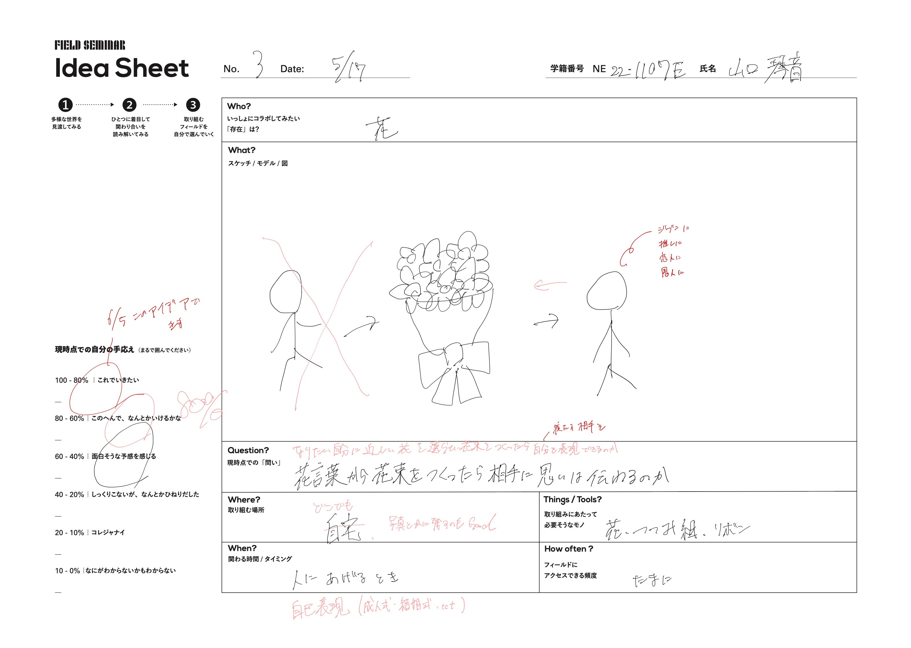

前期の活動
発想
私はアイデアを考えるときに、まず自分が一番興味があるものは何だろうと考えました。そのときに「花」をテーマに選びました。 花は人にあげるプレゼントとして使われますが、あげる花の「花言葉」を知らずにあげる人も多いのではないかと考えました。花言葉はとても奥深いものです。 色や本数によって変わる花言葉を通じて、もっと多くの人に花の魅力を知ってもらいたいと思い、このアイデアを思いつきました。
自己表現というワード
「花をあげる」と聞くと、他の人にあげることを想像する人が多いかもしれません。しかし、今回のテーマは違います。 花束を通して「自己表現」するという新しい方法に焦点を当てています。花言葉を通して自己を表現するというのは、SNS時代にマッチした新しい自己表現方法だと考えています。
花で表す個性の表現
ー CAFE Lur ー
フィールド演習のテーマである「人間ではない者たち」。このテーマに対して、私は「花」を使った自己表現を提案しました。 いま「個性」を大切にする社会の中で、SNSを使えば顔の知らない相手とも繋がれます。自己表現はどのように行われているのでしょうか？ 私は「花」を通じて新しい自己表現の方法を提案します。
目的 Lurは「個性の表現」をテーマに、花束を通じて自己表現を促すことを目的としています。
ターゲット SNSを利用している若者をターゲットとしています。
場所 セルフ写真館、チームラボのスペースを活用予定です。
方法
- メインとなる花を選びます。
- その花を基にして、他の花と組み合わせて花束を作ります。
- 最後に、完成した花束で写真撮影を行います。
期待される効果
- SNSでの自己表現の一環として、Lurを通じて拡散されることを期待しています。
- 「誰かがやれば皆がやる」というトレンドを活用し、さらなる広がりを狙います。